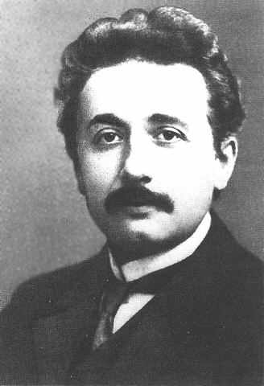
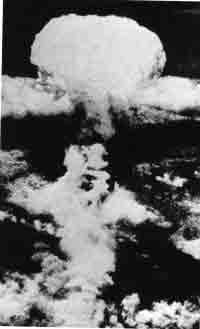
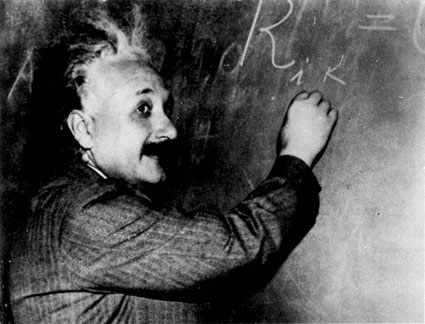

10 ALBERT EINSTEIN 1879-1955
Albert
Einstein, tak salah lagi, seorang ilmuwan terhebat abad
ke-20. Cendekiawan tak ada tandingannya sepanjang jaman.
Termasuk karena teori "relativitas"-nya. Sebenarnya teori
ini merupakan dua teori yang bertautan satu sama lain: teori
khusus "relativitas" yang dirumuskannya tahun 1905 dan teori
umum "relativitas" yang dirumuskannya tahun 1915, lebih
terkenal dengan hukum gaya berat Einstein. Kedua teori ini
teramat rumitnya, karena itu bukan tempatnya di sini
menjelaskan sebagaimana adanya, namun uraian ala kadarnya
tentang soal relativitas khusus ada disinggung sedikit.
Pepatah bilang, "semuanya adalah relatif." Teori Einstein
bukanlah sekedar mengunyah-ngunyah ungkapan yang nyaris
menjemukan itu. Yang dimaksudkannya adalah suatu pendapat
matematik yang pasti tentang kaidah-kaidah ilmiah yang
sebetulnya relatif. Hakikatnya, penilaian subyektif terhadap
waktu dan ruang tergantung pada si penganut. Sebelum
Einstein, umumnya orang senantiasa percaya bahwa dibalik
kesan subyektif terdapat ruang dan waktu yang absolut yang
bisa diukur dengan peralatan secara obyektif. Teori Einstein
menjungkir-balikkan secara revolusioner pemikiran ilmiah
dengan cara menolak adanya sang waktu yang absolut. Contoh
berikut ini dapat menggambarkan betapa radikal teorinya,
betapa tegasnya dia merombak pendapat kita tentang ruang dan
waktu.
Bayangkanlah sebuah pesawat ruang angkasa --sebutlah
namanya X--meluncur laju menjauhi bumi dengan kecepatan
100.000 kilometer per detik. Kecepatan diukur oleh pengamat,
baik yang berada di pesawat ruang angkasa X maupun di bumi,
dan pengukuran mereka bersamaan. Sementara itu, sebuah
pesawat ruang angkasa lain yang bernama Y meluncur laju pada
arah yang sama dengan pesawat ruang angkasa X tetapi dengan
kecepatan yang berlebih. Apabila pengamat di bumi mengukur
kecepatan pesawat ruang angkasa Y, mereka mengetahui bahwa
pesawat itu melaju menjauhi bumi pada kecepatan 180.000
kilometer per detik. Pengamat di atas pesawat ruang angkasa
Y akan berkesimpulan serupa.
Nah, karena kedua pesawat ruang angkasa itu melaju pada
arah yang bersamaan, akan tampak bahwa beda kecepatan antara
kedua pesawat itu 80.000 kilometer per detik dan pesawat
yang lebih cepat tak bisa tidak akan bergerak menjauhi
pesawat yang lebih lambat pada kadar kecepatan ini.
Tetapi, teori Einstein memperhitungkan, jika pengamatan
dilakukan dari kedua pesawat ruang angkasa, mereka akan
bersepakat bahwa jarak antara keduanya bertambah pada
tingkat ukuran 100.000 kilometer per detik, bukannya 80.000
kilometer per detik.
Kelihatannya hal ini mustahil. Kelihatannya seperti
olok-olok. Pembaca menduga seakan ada bau-bau tipu. Menduga
jangan-jangan ada perincian yang disembunyikan. Padahal,
sama sekali tidak! Hasil ini tidak ada hubungannya dengan
tenaga yang digunakan untuk mendorong mereka.
Tak ada keliru pengamatan. Walhasil, tak ada apa pun yang
kurang, alat rusak atau kabel melintir. Mulus, polos, tak
mengecoh. Menurut Einstein, hasil kesimpulan yang tersebut
di atas tadi semata-mata sebagai akibat dari sifat dasar
alamiah ruang dan waktu yang sudah bisa diperhitungkan lewat
rumus ihwal komposisi kecepatannya.
Tampaknya
merupakan kedahsyatan teoritis, dan memang bertahun-tahun
orang menjauhi "teori relativitas" bagaikan menjauhi
hipotesa "menara gading," seolah-olah teori itu tak punya
arti penting samasekali. Tak seorang pun --tentu saja
tidak-- membuat kekeliruan hingga tahun 1945 tatkala bom
atom menyapu Hiroshima dan Nagasaki. Salah satu kesimpulan
"teori relativitas" Einstein adalah benda dan energi berada
dalam arti yang berimbangan dan hubungan antara keduanya
dirumuskan sebagai E = mc2. E menunjukkan energi
dan m menunjukkan massa benda, sedangkan c merupakan
kecepatan cahaya. Nah, karena c adalah sama dengan 180.000
kilometer per detik (artinya merupakan jumlah angka amat
besar) dengan sendirinya c2 (yang artinya c x c) karuan saja
tak tepermanai besar jumlahnya. Dengan demikian berarti,
meskipun pengubahan sebagian kecil dari benda mampu
mengeluarkan jumlah energi luar biasa besarnya.
Orang karuan saja tak bakal bisa membikin sebuah bom atom
atau pusat tenaga nuklir semata-mata berpegang pada rumus E
= mc2. Haruslah dikaji pula dalam-dalam, banyak
orang memainkan peranan penting dalam proses pembangkitan
energi atom. Namun, bagaimanapun juga, sumbangan pikiran
Einstein tidaklah meragukan lagi. Tak ada yang cekcok dalam
soal ini. Lebih jauh dari itu, tak lain dari Einstein
orangnya yang menulis surat kepada Presiden Roosevelt di
tahun 1939, menunjukkan terbukanya kemungkinan membikin
senjata atom dan sekaligus menekankan arti penting bagi
Amerika Serikat selekas-lekasnya membikin senjata itu
sebelum didahului Jerman. Gagasan itulah kemudian mewujudkan
"Proyek Manhattan" yang akhirnya bisa menciptakan bom atom
pertama.
"Teori relativitas khusus" mengundang beda pendapat yang
hangat, tetapi dalam satu segi semua sepakat, teori itu
merupakan pemikiran yang paling meragukan yang pernah
dirumuskan manusia. Tetapi, tiap orang ternyata terkecoh
karena "teori relativitas umum" Einstein merupakan titik
tolak pikiran lain bahwa pengaruh gaya berat bukanlah
lantaran kekuatan fisik dalam makna yang biasa, melainkan
akibat dari bentuk lengkung angkasa luar sendiri, suatu
pendapat yang amat mencengangkan!
Bagaimana bisa orang mengukur bentuk lengkung ruang
angkasa?
Einstein bukan sekedar mengembangkan secara teoritis,
melainkan dituangkannya ke dalam rumusan matematik yang
jernih dan jelas sehingga orang bisa melakukan ramalan yang
nyata dan hipotesanya bisa diuji. Pengamatan berikutnya
--dan ini yang paling cemerlang karena dilakukan tatkala
gerhana matahari total-- telah berulang kali diyakini
kebenarannya karena bersamaan benar dengan apa yang
dikatakan Einstein.
Teori umum tentang relativitas berdiri terpisah dalam
beberapa hal dengan semua hukum-hukum ilmiah. Pertama,
Einstein merumuskan teorinya tidak atas dasar
percobaan-percobaan, melainkan atas dasar-dasar kehalusan
simetri dan matematik. Pendeknya berpijak diatas dasar
rasional seperti lazimnya kebiasaan para filosof Yunani dan
para cendekiawan abad tengah perbuat. Ini berarti, Einstein
berbeda cara dengan metode ilmuwan modern yang berpandangan
empiris. Tetapi, bedanya ada juga: pemikir Yunani dalam hal
pendambaan keindahan dan simetri tak pernah berhasil
mengelola dan menemukan teori yang mekanik yang mampu
bertahan menghadapi percobaan pengujian yang rumit-rumit,
sedangkan Einstein dapat bertahan dengan sukses terhadap
tiap-tiap percobaan. Salah satu hasil dari pendekatan
Einstein adalah bahwa teori umum relativitasnya dianggap
suatu yang amat indah, bergaya, teguh dan secara intelektual
memuaskan semua teori ilmiah.
Teori relativitas umum juga dalam beberapa hal berdiri
secara terpisah. Kebanyakan hukum-hukum ilmiah lain hanya
kira-kira saja berlaku. Ada yang kena dalam banyak hal,
tetapi tidak semua. Sedangkan mengenai teori umum
relativitas, sepanjang pengetahuan, sepenuhnya diterima
tanpa kecuali. Tak ada keadaan yang tak diketahui, baik
dalam kaitan teoritis atau percobaan praktek yang
menunjukkan bahwa ramalan-ramalan teori umum relativitas
hanya berlaku secara kira-kira. Bisa saja
percobaan-percobaan di masa depan merusak nama baik hasil
sempurna yang pernah dicapai oleh sesuatu teori, tetapi
sepanjang menyangkut teori umum relativitas, jelas tetap
merupakan pendekatan yang paling diandalkan bagi setiap
ilmuwan dalam usahanya menuju kebenaran terakhir.
Meskipun Einstein teramat terkenal dengan "teori
relativitas"-nya, keberhasilan karyanya di bidang ilmiah
lain juga membuatnya tersohor selaku ilmuwan dalam setiap
segi. Nyatanya, Einstein peroleh Hadiah Nobel untuk bidang
fisika terutama lantaran buah pikiran tertulisnya
membeberkan efek-efek foto elektrik, sebuah fenomena penting
yang sebelumnya merupakan teka-teki para cerdik pandai.
Dalam karya tulisan ilmiah itu Einstein membuktikan
eksistensi photon, atau partikel cahaya.
Anggapan lama lewat percobaan yang tersendat-sendat
mengatakan bahwa cahaya itu terdiri dari gelombang elektro
magnit, dan gelombang serta partikel merupakan konsep yang
berlawanan. Sedangkan hipotesa Einstein menunjukkan suatu
perbedaan yang radikal dan amat bertentangan dengan
teori-teori klasik. Bukan saja hukum foto elektriknya
terbukti punya arti penting dalam penggunaan, tetapi
hipotesanya tentang photon punya pengaruh besar dalam
perkembangan teori kuantum (hipotesa bahwa dalam radiasi,
energi elektron dikeluarkan tidak kontinyu melainkan dalam
jumlah tertentu) yang saat ini merupakan bagian tak
terpisahkan dari teori itu.
Dalam hal menilai arti penting Einstein, suatu
perbandingan dengan Isaac Newton merupakan hal menyolok.
Teori Newton pada dasarnya mudah dipahami, dan kegeniusannya
sudah tampak pada awal mula perkembangan. Sedangkan "teori
relativitas" Einstein teramat sulit dipahami biarpun lewat
penjelasan yang cermat dan hati-hati. Lebih-Lebih rumit lagi
jika mengikhtisarkan aslinya! Tatkala beberapa gagasan
Newton mengalami benturan dengan gagasan ilmiah pada
jamannya, teorinya tak pernah tampak luntur atau goyah
dengan pendiriannya. Sebaliknya, "teori relativitas" penuh
dengan hal yang saling bertentangan. Ini merupakan bagian
dari kegeniusan Einstein bahwa pada saat permulaan, ketika
gagasannya masih merupakan hipotesa yang belum diuji yang
dikemukakannya selaku orang muda belasan tahun yang
samasekali tidak dikenal, dia tak pernah membiarkan
kontradiksi yang nyata-nyata ada ini dan mencampakkan
teorinya. Sebaliknya malahan dia dengan sangat cermat dan
hati-hati merenungkan terus hingga ia mampu menunjukkan
bahwa kontradiksi ini hanya pada lahirnya saja sedangkan
sebenarnya tiap masalah selalu tersedia untuk memecahkan
kontradiksi itu dengan cara yang halus namun cerdik dan
tegas.
Kini, kita anggap teori Einstein itu pada dasarnya lebih
"correct" ketimbang teori Newton. Jika begitu halnya kenapa
Einstein ditempatkan Lebih bawah dalam daftar tingkat urutan
buku ini?
Alasannya tersedia. Pertama, teori-teori Newtonlah yang
merupakan peletak dasar dan batu pertama ilmu pengetahuan
modern dan teknologi. Tanpa karya Newton, kita tidak akan
menyaksikan teknologi modern sekarang ini. Bukannya
Einstein.
Ada lagi faktor yang menyebabkan mengapa kedudukan
Einstein dalam urutan seperti yang pembaca saksikan. Dalam
banyak hal, perkembangan suatu ide melibatkan sumbangan
pikiran banyak orang. Ini jelas sekali misalnya dalam ihwal
sejarah sosialisme, atau dalam pengembangan teori listrik
dan magnit. Meskipun Einstein tidak 100% merumuskan "teori
relativitas" dengan otaknya sendiri, yang sudah pasti
sebagian terbesar memang sahamnya. Adalah adil mengatakan
bahwa ditilik dari perbandingan arti penting ide-ide lain,
teori-teori relativitas terutama berasal dari kreasi
seorang, si genius dan si jempolan, Einstein.

Einstein mendiskusikan teori-teorinya.
Einstein lahir tahun 1879, di kota Ulm, Jerman. Dia
memasuki perguruan tinggi di Swiss dan menjadi warganegara
Swiss tahun 1900. Di tahun 1905 dia mendapat gelar Doktor
dari Universitas Zurich tetapi (anehnya) tak bisa meraih
posisi akademis pada saat itu. Di tahun itu pula dia
menerbitkan kertas kerja perihal "relatif khusus," perihal
efek foto elektrik, dan tentang teori gerak Brown. Hanya
dalam beberapa tahun saja kertas-kertas kerja ini, terutama
yang menyangkut relativitas, telah mengangkatnya menjadi
salah seorang ilmuwan paling cemerlang dan paling orisinal
di dunia. Teori-teorinya sangat kontroversial. Tak ada
ilmuwan dunia kecuali Darwin yang pernah menciptakan situasi
kontroversial seperti Einstein. Akibat itu, di tahun 1913
dia diangkat sebagai mahaguru di Universitas Berlin dan pada
saat berbarengan menjadi Direktur Lembaga Fisika "Kaisar
Wilhelm" serta menjadi anggota Akademi Ilmu Pengetahuan
Prusia. Jabatan-jabatan ini tidak mengikatnya untuk
sebebas-bebasnya mengabdikan sepenuh waktu melakukan
penyelidikan-penyelidikan, kapan saja dia suka.
Pemerintah Jerman tidak menyesal menyiram Einstein dengan
sebarisan panjang kedudukan yang istimewa itu karena persis
dua tahun kemudian Einstein berhasil merumuskan "teori umum
relativitas," dan tahun 1921 dia memperoleh Hadiah Nobel.
Sepanjang paruhan terakhir dari kehidupannya, Einstein
menjadi buah bibir dunia, dan hampir dapat dipastikan dialah
ilmuwan yang masyhur yang pernah lahir ke dunia.
Karena Einstein seorang Yahudi, kehidupannya di Jerman
menjadi tak aman begitu Hitler naik berkuasa. Di tahun 1933
dia hijrah ke Princeton, New Jersey, Amerika Serikat,
bekerja di Lembaga Studi Lanjutan Tinggi dan di tahun 1940
menjadi warga negara Amerika Serikat. Perkawinan pertama
Einstein berujung dengan perceraian, hanya perkawinannya
yang kedua tampaknya baru bahagia. Punya dua anak, keduanya
laki-laki. Einstein meninggal dunia tahun 1955 di
Princeton.
Einstein senantiasa tertarik pada ihwal kemanusiaan dunia
di sekitarnya dan sering mengemukakan pandangan-pandangan
politiknya. Dia merupakan pelawan teguh terhadap sistem
politik tirani, seorang pendukung gigih gerakan Pacifis, dan
seorang penyokong teguh Zionisme. Dalam hal berpakaian dan
kebiasaan-kebiasaan sosial dia tampak seorang yang
individualistis. Suka humor, sederhana dan ada bakat gesek
biola. Tulisan pada nisan makam Newton yang berbunyi:
"Bersukarialah para arwah karena hiasan yang ditinggalkannya
bagi kemanusiaan!" sebetulnya lebih kena untuk Einstein.
|